CIFAR-10
Lecture 11 Géron Ch. 11
Applications of Machine Learning
BSc Mathematics of Artificial Intelligence · Third year
You can build a network and you own its training loop. So build a deep one — twenty hidden layers on CIFAR-10 — and train it exactly as Lecture 10 taught.
Depth is not free, and the reason is arithmetic. Today we measure what goes wrong, derive why, and repair it — in that order, because the repair is unreadable until you have seen the measurement.
First, look
20 minutes
Read that again and note what it does not say: nothing about how the weights start out. That is not something we are hiding — it is the ordinary case. Almost no specification mentions it.
def make_net(depth=20, width=100, n_in=3072, n_out=10):
layers, prev = [], n_in
for _ in range(depth):
layers += [nn.Linear(prev, width), nn.Sigmoid()]
prev = width
layers.append(nn.Linear(prev, n_out))
return nn.Sequential(*layers)
net = make_net()
Nine lines. It is the same nn.Sequential from
the previous lecture with the middle repeated
20 times.
| Layer | Shape | Parameters |
|---|---|---|
| First | 3,072 → 100 | 307,300 |
| Each of the other 19 | 100 → 100 | 10,100 |
| Head | 100 → 10 | 1,010 |
| Total | 21 weight matrices | 500,210 |
Comparable to the previous lecture's network, which reached 88% on Fashion MNIST. Nothing here is under-parameterised.
Because more layers is supposed to be more expressive. Each layer composes a new nonlinearity on top of the last, and the number of regions a network can carve out of its input space grows with depth faster than with width.
That is the theory. Today we test it.
Nobody deploys a twenty-layer dense network on flattened pixels. It is here because it is the smallest thing that breaks in the way Chapter 11 is about, and because the break is invisible at three layers.
| Training loss | |
|---|---|
| A model that has learned nothing, $\ln 10$ | 2.3026 |
| Epoch 1 | 2.3091 |
| Epoch 20 | 2.3036 |
8 seconds on mps, 20 epochs, 500,210 parameters.
The loss moved by 0.0055 in 20 epochs.
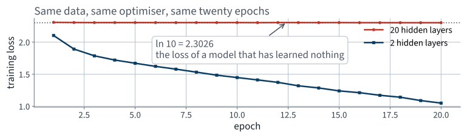
The red curve is not noisy, or slow, or plateauing early. It has not started.
10.0%
Test accuracy, 10,000 images.
| Always predict one class | 10.0% |
| 20 hidden layers, 500,210 parameters | 10.0% |
Half a million parameters and twenty epochs bought exactly
what a single return 3 would have.
for k in (1, 2, 5, 10, 20):
net, hist = train(make_net(depth=k)) # same seed, data, epochs
print(k, accuracy(net, X_test, y_test))
Same data, same seed, same optimiser, same 20 epochs. One argument moves.
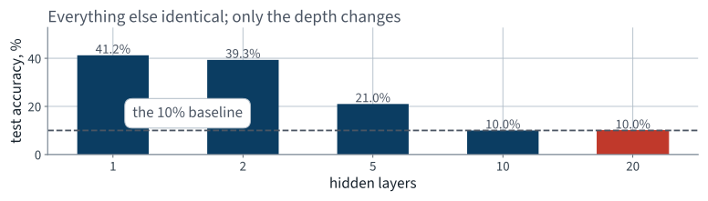
Adding layers made it worse, and past a point made it useless. That is not what capacity is supposed to do.
| Hidden layers | Parameters | Final loss | Test accuracy |
|---|---|---|---|
| 1 | 308,310 | 1.0259 | 41.2% |
| 2 | 318,410 | 1.0503 | 39.3% |
| 5 | 348,710 | 1.6925 | 21.0% |
| 10 | 399,210 | 2.3035 | 10.0% |
| 20 | 500,210 | 2.3036 | 10.0% |
Note that the parameter count barely moves after the first layer — the 3,072-input layer dominates. So this is not a capacity effect.
Which is where the previous lecture's real purchase pays off.
Part three, continued
the reason you own the loop
Backpropagation computes 500,210 partial derivatives on every
batch. Under MLPClassifier.fit() every one of them was
discarded.
They are all still here, in p.grad, and we can
look at any of them.
Two probes, about ten lines each. Without them the diagnosis today is “it does not train” and there is no next step.
@torch.no_grad()
def activation_stats(net, X, n=512):
net.eval()
h, rows = X[:n], []
for m in net:
h = m(h)
if isinstance(m, nn.Sigmoid):
rows.append({"mean": float(h.mean()),
"sd": float(h.std()),
"sat": float(((h - .5).abs() > .45)
.float().mean())})
return rows
Running the modules by hand instead of calling
net(X). That is legal because a Sequential is an
iterable of modules, and it is the cheapest possible instrumentation.
| Layer | Mean | Standard deviation | Saturated |
|---|---|---|---|
| 1 | 0.4995 | 0.1311 | 0.000 |
| 2 | 0.4986 | 0.0707 | 0.000 |
| 5 | 0.4881 | 0.0773 | 0.000 |
| 10 | 0.5055 | 0.0731 | 0.000 |
| 15 | 0.4861 | 0.0663 | 0.000 |
| 20 | 0.5114 | 0.0710 | 0.000 |
“Saturated” means the logistic’s own derivative has collapsed — here, an output further than 0.45 from a half.
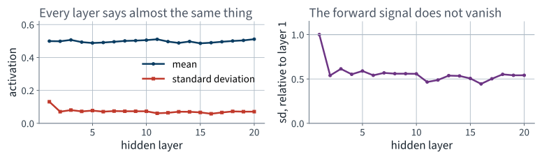
Mean near a half, spread near 0.071, flat for twenty layers. Hold that conclusion for two slides.
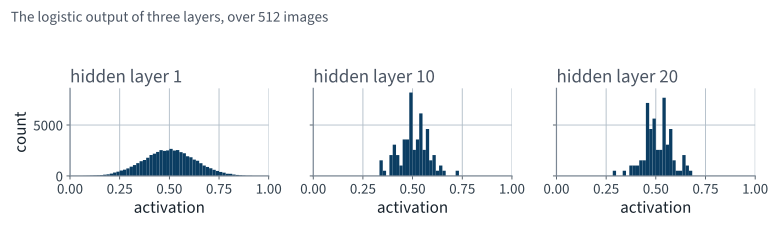
If the logistic were saturating, these would be two spikes at 0 and 1. They are not. The textbook’s first explanation does not apply to this network.
h.std() spans the whole tensor, so it is dominated by the spread of the layer’s random biases across units — which does not change with depth. It would read 0.07 in a network that had stopped computing entirely.
What carries information is the spread down the batch — how much a unit moves when the input does.
| Hidden layer | 1 | 5 | 10 | 20 |
|---|---|---|---|---|
h.std() — what we plotted | 0.131 | 0.071 | 0.071 | 0.071 |
h.std(dim=0).mean() — the signal | 1.3e−01 | 5.9e−05 | 3.0e−09 | 2.4e−17 |
Sixteen orders of magnitude. The forward signal does die — by a factor of 0.149 per layer, which is the number the derivation predicts from the fan-in and the same rate the gradient vanishes at. By layer 20 the network is no longer a function of its input.
And the saturation column was no better. It asks whether $|h - \tfrac12| > 0.45$, in a band whose sd is 0.071 — a threshold 6.3 standard deviations away, and 3.4 even at layer 1. Nothing could ever have exceeded it. “0.000 at every depth” was arithmetic, not evidence.
lins = [m for m in net if isinstance(m, nn.Linear)]
for _ in range(8): # 8 batches, not 1
net.zero_grad()
lossf(net(xb), yb).backward()
acc += np.array([float(m.weight.grad.norm()) for m in lins])
profile = acc / 8
Eight batches rather than one, because a single batch of 128 is a noisy estimate of anything and a course that says so should not then quote one.
| Layer | ‖∂L/∂W‖ |
|---|---|
| 1 — nearest the input | 4.567e-17 |
| 5 | 9.296e-15 |
| 10 | 1.845e-10 |
| 15 | 3.042e-06 |
| 20 | 6.608e-02 |
| head | 4.866e-01 |
Layer 20 receives 1.45e+15 times what layer 1 does.
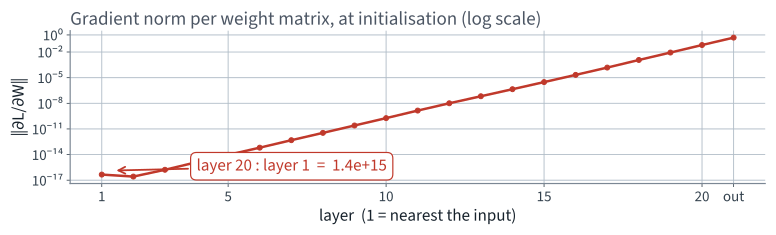
Read the axis. Each gridline is a factor of ten, and the line crosses about 15 of them.
It is straight on a logarithmic axis.
A straight line on a log axis is a geometric sequence. The attenuation is not one bad layer, or a fault at the input: it is the same factor, applied at every layer.
Which means one number characterises the whole network, and it is a number the next lecture predicts from the shapes of the matrices.
0.1593
The geometric mean of the ratio between neighbouring layers, over 19 steps.
| Per layer, descending | × 0.1593 |
| Over 19 layers | × 6.91e-16 |
| Which is one part in | 1.45e+15 |
Write both numbers on your sheet. The next lecture derives the first from arithmetic on the shapes of the weight matrices, and the second follows.
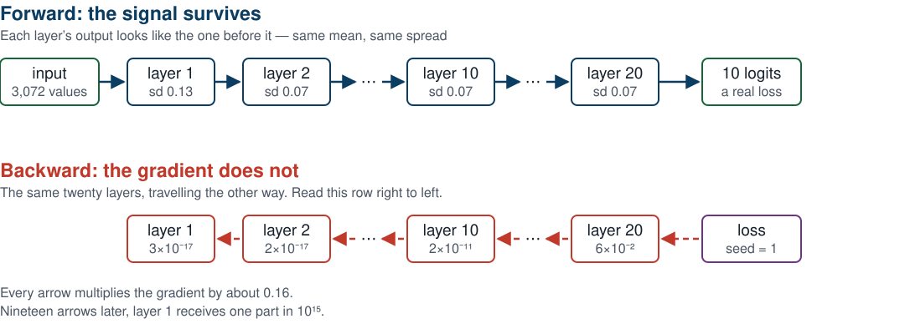
Same twenty layers, same weights. Healthy going right, extinguished going left.
A fair question: perhaps the first layers are merely slow to start, and the profile flattens as the network learns. We logged the per-layer norms at every epoch, so this is a lookup and not a guess.
| Gradient at layer 1 | ‖∂L/∂W‖ |
|---|---|
| Epoch 1 | 6.660e-17 |
| Epoch 20 | 4.610e-17 |
20 epochs of Adam did not move the first layer’s gradient into a range where a learning rate of 0.001 could do anything with it.
| Layer | Relative change over 20 epochs |
|---|---|
| 1 | 0.0000 |
| 10 | 0.0001 |
| 14 | 0.1592 |
| 20 | 0.5890 |
| head | 0.0954 |
Measured as $\lVert W_{\text{after}} - W_{\text{before}}\rVert / \lVert W_{\text{before}}\rVert$. The bottom half did not move at all — layer 1 to four decimal places, layer 10 to three. Only the top six layers learned anything, and they had nothing useful beneath them to work with.
Adam divides by a running estimate of the gradient’s own magnitude, so it is tempting to think a small gradient is automatically compensated.
The obvious reply, and it is worth stating why it cannot work.
The gradient at the head is 4.87e-01 and at layer 1 it is 4.57e-17. Any learning rate large enough to move layer 1 is 1e+16 times too large for the head.
| Vanishing | Exploding | |
|---|---|---|
| Per-layer factor | $\rho < 1$ | $\rho > 1$ |
| Symptom | the loss does not move | NaN, or a loss that jumps |
| Which layers suffer | the ones nearest the data | all of them, at once |
| How obvious | silent | loud |
We have the quiet one.
Both are the same mechanism at different values of one number, which is why one derivation in the next lecture covers both.
What we cannot yet say: why that factor is 0.159 and not 1.
That is a question about the weight matrices themselves, and it has an exact answer.
The mathematics
20 minutes · examinable
Why 0.1593?
Not “why is it small”. Why is it that number, and what would it have to be instead?
Drop the activation for a moment and look at the linear part alone:
$a$ is what arrives, $z$ is what leaves, $n_{\text{in}}$ is the fan-in — the number of inputs each output unit sums over. For our hidden layers that is 100; for the first layer it is 3,072.
All three are idealisations. That is fine: the point of an idealisation is that you can compute with it, and then check the answer against a measurement. We will do exactly that in twelve slides.
Assumption 3 is the weakest of the three at the input layer: Lecture 9 divided the pixels by 255, so they arrive in $[0,1]$ with a mean near 0.5 rather than 0. Which is one reason the prediction below is checked against a measurement rather than trusted.
Under those assumptions each term $w_{ij}a_j$ has mean zero, and the terms are uncorrelated, so the variances add:
Everything in this lecture is a consequence of that line.
Note the shape of it: the input variance is multiplied by a factor. That is what will make depth dangerous.
Var(w) = 0.001 predicted Var(z) = 0.1000 measured 0.1002
Var(w) = 0.010 predicted Var(z) = 1.0000 measured 0.9727
Var(w) = 0.020 predicted Var(z) = 2.0000 measured 2.0502
Var(w) = 0.050 predicted Var(z) = 5.0000 measured 5.0050
One layer, fan-in 100, twenty thousand random inputs of unit variance. Four lines of NumPy, and the same habit as Lecture 2's orthogonality test: verify the identity you are about to reason with.
We want the signal to arrive at layer 20 with the spread it had at layer 1. Otherwise, whichever way it drifts, twenty layers of drift is a factor of $r^{20}$.
One equation, one unknown. If the fan-in were the only thing in the network, we would be finished.
The backward pass runs the same matrix transposed. Using the adjoint notation from Lecture 10:
Identical algebra with one index swapped: the transpose sums over the output dimension, so the fan-out appears where the fan-in did.
Because a row of $W$ and a column of $W$ are different sums.
Exactly the fan-in / fan-out bookkeeping from Lecture 10: a node's adjoint is the sum over its outgoing edges. Here we are counting how many such edges there are.
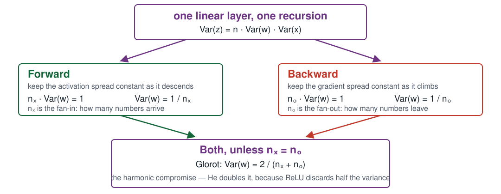
The same line of algebra, read in two directions, asks for two different answers.
$\dfrac{1}{n_{\text{in}}}$ and $\dfrac{1}{n_{\text{out}}}$ are the same number only when $n_{\text{in}} = n_{\text{out}}$.
| Layer | $n_{\text{in}}$ | $n_{\text{out}}$ | Can both be satisfied? |
|---|---|---|---|
| First | 3,072 | 100 | no — they differ by a factor of 30 |
| Each hidden | 100 | 100 | yes, exactly |
| Head | 100 | 10 | no |
Every network whose layers change width — which is every network — has to give something up.
Do not choose. Take the harmonic mean of the two demands:
A small error in both directions rather than a large error in one. On a layer where the two fans are equal it is not a compromise at all — it is exact, and reduces to $1/n$.
Harmonic rather than arithmetic because the quantities being averaged are reciprocals of the fans.
nn.init.xavier_normal_(w) # N(0, 2/(fan_in + fan_out))
nn.init.xavier_uniform_(w) # U(-r, r), r = sqrt(6/(fan_in + fan_out))
The uniform version has the same variance: a uniform on $(-r, r)$ has variance $r^2/3$, and $6/3 = 2$. Choose either; nothing in the derivation cares about the shape of the distribution, only its variance.
On our hidden layers this gives $\operatorname{Var}(w) =$ 0.0100, a standard deviation of 0.1000 — against the default's 0.0577.
Between two linear maps sits $\varphi$, and the backward pass multiplies by its derivative pointwise. So the true per-layer factor on the standard deviation of the backward signal is
Two factors we control — the shape of the matrix and the variance we initialise it with — and one that belongs to the activation function.
Not “usually small”. Bounded above by a quarter, everywhere, and equal to a quarter only at $z = 0$.
So the logistic multiplies $\rho$ by at most 0.25, before any weight has been chosen.
That is the ceiling. Over 19 layers, even a perfectly initialised logistic stack cannot do better than $(1/4)^{19}$.
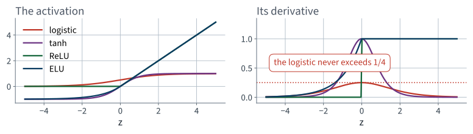
Read the right-hand panel. Everything except the logistic reaches a derivative of 1 somewhere; the logistic never does.
For a symmetric, zero-mean $z$, ReLU zeroes half the units and leaves the rest alone:
Both statements are the same statement: half the time the derivative is 1, half the time it is 0. Nothing is bounded away from 1 the way the logistic is — the loss is a clean factor of two, and a factor of two can be paid for.
Pay for it by doubling the weight variance:
On our hidden layers, $\operatorname{Var}(w) =$ 0.0200 and $\operatorname{sd}(w) =$ 0.1414 — against Glorot's 0.1000 and the default's 0.0577.
Then $\rho = \sqrt{n_{\text{out}}\cdot \tfrac{2}{n_{\text{in}}}\cdot\tfrac12} = \sqrt{n_{\text{out}}/n_{\text{in}}}$ — which is 1 exactly when the fans are equal.
He fixes the forward condition, so it uses the fan-in. The backward one coincides only on a square layer; off square, Glorot's compromise is still the honest choice.
| Scheme | $\operatorname{Var}(w)$ | $\mathbb{E}[\varphi'^2]$ | predicted $\rho$ |
|---|---|---|---|
| default, logistic | 0.00333 | 0.0625 | 0.1443 |
| Glorot, logistic | 0.01000 | 0.0625 | 0.2500 |
| Glorot, ReLU | 0.01000 | 0.5000 | 0.7071 |
| He, ReLU | 0.02000 | 0.5000 | 1.0000 |
Nothing in that table came from running anything. It is the fan-in, the fan-out, and one expectation.
There is no safe value of $\rho$ except one.
| $\rho$ | over 19 steps | what you see | where |
|---|---|---|---|
| 0.144 | $10^{-16}$ | the loss does not move | the previous lecture |
| 0.707 | $10^{-3}$ | trains, slowly, badly | in forty minutes |
| 1.000 | 1 | every layer learns | the target |
| 1.400 | $10^{3}$ | NaN | illustrative |
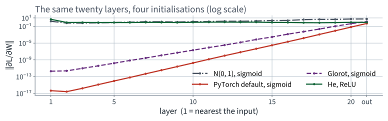
Four straight lines with four different slopes, and the slope is $\log\rho$ in each case.
The recursion was symmetric, so the forward activations must be geometric in the depth too — with ratio $r = n_{\text{in}}\operatorname{Var}(w)/2$ for ReLU.
Easy to falsify: fix the activation to ReLU, set the weight standard deviation by hand, and watch the activation spread against depth. He's value for 100 units is $\sqrt{2/100} =$ 0.1414.
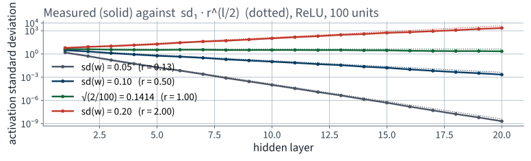
The dotted lines are the prediction, not a fit. One value of the weight scale is flat; every other value is an exponential.
Point 4 is the one that makes deep networks a separate subject rather than a bigger version of shallow ones.
The method
35 minutes · examinable
for m in net:
if not isinstance(m, nn.Linear):
continue
nn.init.xavier_normal_(m.weight) # Var = 2/(fan_in + fan_out)
nn.init.zeros_(m.bias)
# or, for ReLU:
nn.init.kaiming_normal_(m.weight, nonlinearity="relu")
Two lines. kaiming_normal_ is He; the argument
nonlinearity is what selects the factor of two, and its default
is "leaky_relu" with slope 0.01 — near enough, but say
what you mean.
| $\rho$ | End to end | Test accuracy | |
|---|---|---|---|
| Default, logistic | 0.1593 | 1.4e+15 | 10.0% |
| Glorot, logistic | 0.2531 | 2.2e+11 | 10.0% |
Nearly four orders of magnitude better, and still eleven orders of attenuation — which is hopeless.
Because the measured $\rho$ is now 0.253 — which is 0.25, the logistic's own ceiling, with the weight scale perfectly neutralised. You cannot initialise your way out of the activation function.
Every requirement on $\varphi$ comes from the thread:
ReLU satisfies the first two and fails the third. It is still the right default.
The repairs are all the same idea — give the negative side a non-zero slope:
| Variant | Negative side | Cost |
|---|---|---|
| Leaky ReLU | $\alpha z$, $\alpha \approx 0.01$ | none |
| ELU | $\alpha(e^{z} - 1)$ | an exponential per unit |
| SELU | ELU, scaled to self-normalise | strict conditions on the architecture |
| Activation | Initialisation | Test accuracy |
|---|---|---|
| logistic | Glorot | 40.4% |
| tanh | Glorot | 38.5% |
| ReLU | He | 36.8% |
| Leaky ReLU | He | 37.1% |
| ELU | He | 43.2% |
| SELU | Glorot | 41.0% |
Spread: 6.4% points — and the logistic is not last.
All six with batch normalisation, which is why the logistic survives: normalisation puts the pre-activations back where its derivative is largest, at every step. Without normalisation, moving off the logistic was worth 31.1% points. With it, the choice of activation is worth 6.4%.
Initialisation gets $\rho$ right once. Normalisation makes it right at every step, by standardising each layer’s inputs and then learning what scale they should have had.
$\mu_B$ and $\sigma_B$ are computed over the batch; $\gamma$ and $\beta$ are learned. The second step is what stops it from being a straitjacket: the network can undo the normalisation if it needs to.
layers += [nn.Linear(prev, width),
nn.BatchNorm1d(width), # before the activation
nn.ReLU()]
Linear is now redundant —
$\beta$ does the same job. Harmless, and worth knowing4,000 extra parameters across the whole network, against 500,210. Under one per cent.
Which is Lecture 10's model.eval() failure
again — and it is now much harder to catch. Dropout wobbles between
calls, so running the evaluation twice exposes it. Batch normalisation in
training mode is deterministic for a fixed batch, so the same trick
finds nothing.
New reviewer question: if there is a normalisation
layer, was eval() called? Running it twice will not tell you.
| On the ReLU + He network | Test accuracy | Parameters | Seconds, 3 epochs |
|---|---|---|---|
| No normalisation | 41.1% | 500,210 | 5.24 |
| Batch normalisation | 36.8% | 504,210 | 11.30 |
| Layer normalisation | 41.6% | 504,210 | 9.49 |
Batch normalisation made it worse, by -4.3% accuracy points.
The timing is the minimum of 3 repeats: these figures were generated on a shared machine, contention can only make a run slower, so the smallest reading is the closest to the true cost. Batch normalisation costs 2.16× the epoch.
Two measurements, and they are not in conflict.
| Batch normalisation applied to… | Test accuracy |
|---|---|
| the broken network, on its own | 10.0% → 37.9% |
| the already repaired network | 41.1% → 36.8% |
On a wider network, a longer run, or one whose weights drift further, that trade goes the other way. The point is that you can tell which case you are in, because you measured both.
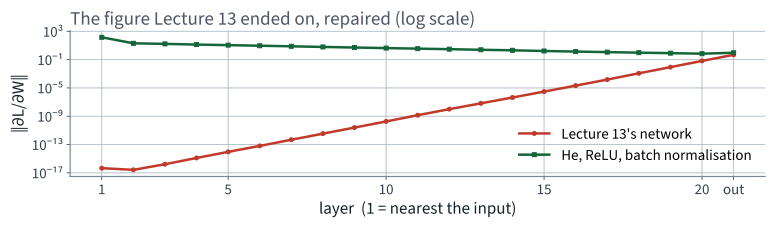
Same axes, same scale, same network shape. Layer 1 now receives a gradient of the same order as layer 20.
loss.backward()
torch.nn.utils.clip_grad_norm_(net.parameters(), 1.0)
opt.step()
Rescale the whole gradient vector when its norm exceeds a threshold. It preserves the direction and bounds the length.
This is a defence against $\rho > 1$. We have $\rho < 1$. Look at the distribution of norms before choosing a threshold — a clip below the median silently turns your optimiser into something else.
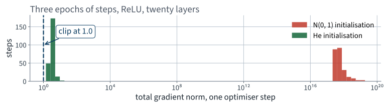
Median 3.19 with He, against a median of 4.6e+17 with N(0, 1). The threshold of 1.0 used in the ladder sits below the He median — deliberately, and the next slide says what that bought.
| Gradient clipping at 1.0 | Test accuracy |
|---|---|
| applied alone to the failing network | 10.0% — nothing |
| added to the repaired network | 36.8% → 39.6% |
Alone it cannot help: you cannot bound your way out of a gradient that is 1e+15 times too small. On the repaired network a threshold below the median acts as a step-size limiter rather than a safety net, and here that was worth +2.8% points.
Which is a useful effect obtained for the wrong reason. If you want a smaller step, set a smaller learning rate and say so.
Now that the gradient reaches every layer, the optimiser has something to work with. Comparing them on the broken network would have measured nothing.
| Optimiser | Idea | Test accuracy |
|---|---|---|
| SGD | step along the gradient | 27.5% |
| Momentum | accumulate a velocity | 33.6% |
| Nesterov | measure the gradient ahead of the step | 35.2% |
| RMSProp | divide by a running gradient scale | 36.8% |
| Adam | momentum and RMSProp together | 36.8% |
| AdamW | Adam, with the weight decay decoupled | 36.1% |
SGD, momentum and Nesterov at 0.01; the adaptive three at 0.001 — the same learning rate would not be a fair comparison.
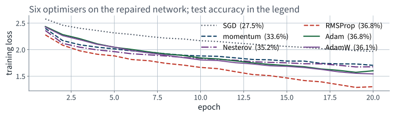
The spread between the best and the worst optimiser here is far smaller than the effect of the initialisation. Order your effort by the measurement, not by the novelty.
One step size cannot suit both the start of training and the end. The book gives five schedules; three are worth having.
All three need to know how long the run is, which is why
they take total_steps and why changing the epoch count silently
changes the schedule.
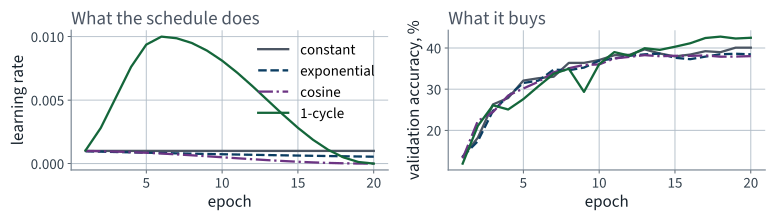
Constant 39.6%, cosine 38.8%, 1-cycle 41.5% — on a twenty-epoch run, one seed each. In the ablation the same schedule is worth +0.5 points against a five-seed spread of ±2.79, so read this panel as a shape, not a ranking.
Zero a random fraction of each layer’s units during training, and scale the rest up so the expected value is unchanged.
layers += [nn.Linear(prev, width), nn.BatchNorm1d(width),
nn.ReLU(), nn.Dropout(0.1)]
This is a regulariser — it fights overfitting. A network sitting at 10% is not overfitting, so applying it to the failing network should do nothing. We are going to check that it does nothing rather than assume it.
The last fifteen minutes
15 minutes
| Configuration | Test accuracy | sd over 5 seeds | Change | Final training loss |
|---|---|---|---|---|
| the failing network, unchanged | 10.0% | ±0.00 | — | 2.3035 |
| + Glorot initialisation | 10.0% | ±0.00 | +0.0 (noise) | 2.3062 |
| + ReLU and He initialisation | 41.3% | ±0.35 | +31.3 | 1.1373 |
| + batch normalisation | 36.5% | ±0.64 | -4.7 | 1.5461 |
| + gradient clipping | 40.8% | ±0.76 | +4.3 | 1.1064 |
| + a 1-cycle schedule | 41.3% | ±2.79 | +0.5 (noise) | 1.2773 |
| + dropout 0.1 | 34.0% | ±1.33 | -7.3 | 1.6346 |
The deliverable of the lecture — photograph it, and photograph the third column with it. Five seeds a row; typical spread 0.84 points. One step is worth +31.3, forty times that. Three more clear it. The 1-cycle schedule does not — +0.5 against ±2.79 — and the single-seed version of this table called it the winner.
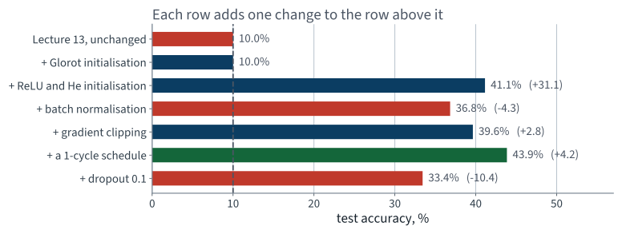
One row moves the number further than the whole journey, and it is the row the mathematics pointed at.
| Accuracy points | |
|---|---|
| The largest single step — ReLU with He | +31.3% |
| Best configuration, against the start | +31.3% |
| The worst single step | -7.3% |
| The last row, against the start | +24.0% |
One change is worth more than the whole ladder.
Which is the answer to “should I add batch normalisation, or dropout, or a schedule?” — the question is malformed until you know which failure you have. Ours was $\rho \ne 1$, and only the repairs that address $\rho$ paid.
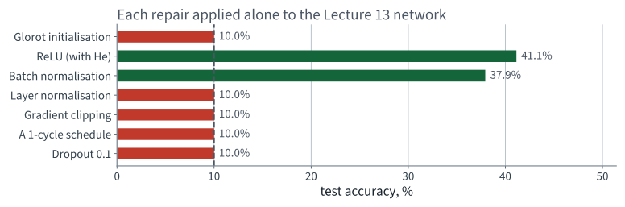
Four of these leave the network exactly where it was. That is not a disappointment — it is what tells you what each one is for.
| Applied alone to the failing network | Test accuracy |
|---|---|
| Glorot initialisation | 10.0% |
| ReLU (with He) | 41.1% |
| Batch normalisation | 37.9% |
| Layer normalisation | 10.0% |
| Gradient clipping | 10.0% |
| A 1-cycle schedule | 10.0% |
| Dropout 0.1 | 10.0% |
Clipping, the schedule and dropout answer problems this network does not have. Glorot buys eleven orders of magnitude of gradient and is still not enough.
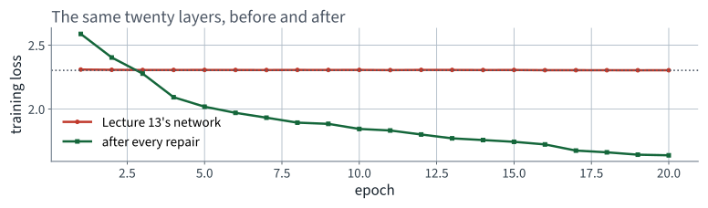
Same architecture, same data, same optimiser, same epochs, same seed. Four lines changed.
| Failure | Diagnosed in | Measured cost |
|---|---|---|
| Scaler fitted before the split | Lecture 2 | nothing measurable |
| Accuracy under class imbalance | Lecture 3 | a useless model above 90% |
Missing optimizer.zero_grad() | Lecture 10 | 76.7 points |
| Metric averaged per batch | Lecture 10 | 0.382 points |
| A deep stack on default initialisation | today | 31.3% points |
| Glorot’s constant used with ReLU | today | 1.5% points |
Every one of them ran to completion and printed a plausible number. The last two are the first in which no line of code is wrong.
train() before training,
eval() before every measurement?| Topic | Chapter |
|---|---|
| Vanishing and exploding gradients | 11 |
| Glorot and He initialisation | 11 |
| Nonsaturating activation functions | 11 |
| Batch normalisation | 11 |
| Gradient clipping | 11 |
| Faster optimisers and learning-rate scheduling | 11 |
| Dropout and regularisation for deep networks | 11 |
| Layer normalisation | 13 |
Not presented — for afterwards
five, in the style of the written paper
Solutions on Lecture 12’s deck.
Solutions on Lecture 12’s deck.
The five set at the end of Lecture 10
not part of this lecture
1. Reverse-mode automatic differentiation costs one sweep for all partial derivatives; forward mode costs one…
Many inputs, one output — which is exactly a loss.
2. Explain why the loss must be a scalar for .backward() to be called without arguments.
The reverse sweep is seeded with $\partial L/\partial L = 1$, which only exists for a scalar.
3. The five lines of the training loop are reordered so that opt.step() comes before loss.backward(). State what…
Nothing raises, and the model stays at chance.
4. A network with dropout is evaluated without calling model.eval(). Describe the symptom precisely, and the…
The score wobbles between identical calls. Evaluate twice and assert the two agree.
5. GPUs did not help at small model sizes in the measured comparison. Give the reason, and the quantity that…
Transfer and launch overhead dominates; the crossover is set by arithmetic per byte moved.
Lecture 12 · Géron Ch. 12
Weight sharing, equivariance, and where the memory goes — derived
Why a flattened image is the wrong representation
Convolution, pooling, and a network built from scratch
Run the Lecture 11 notebook first